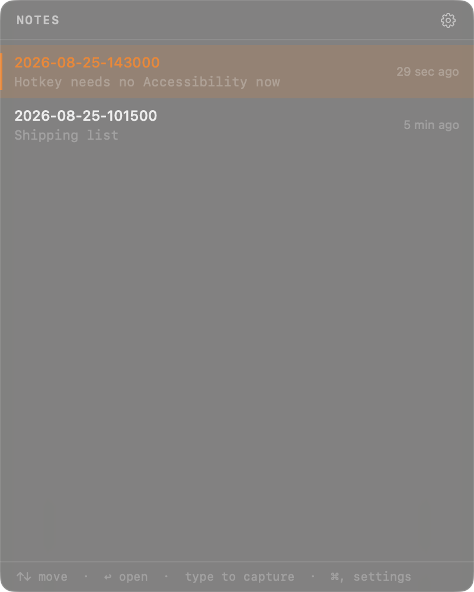
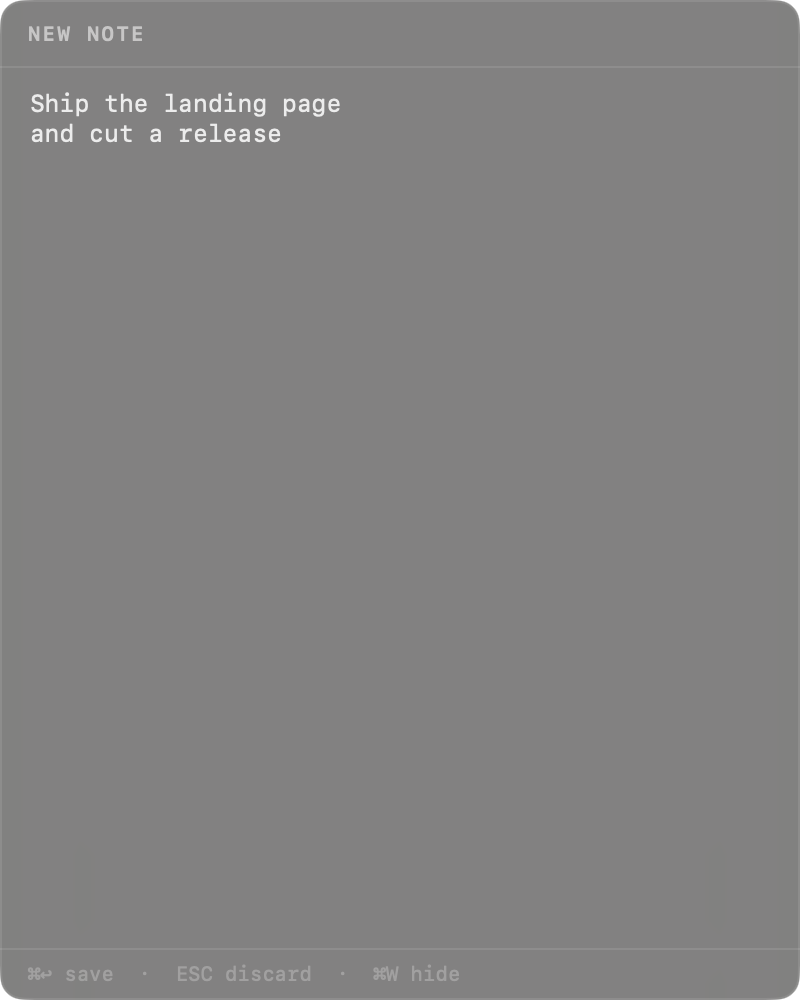
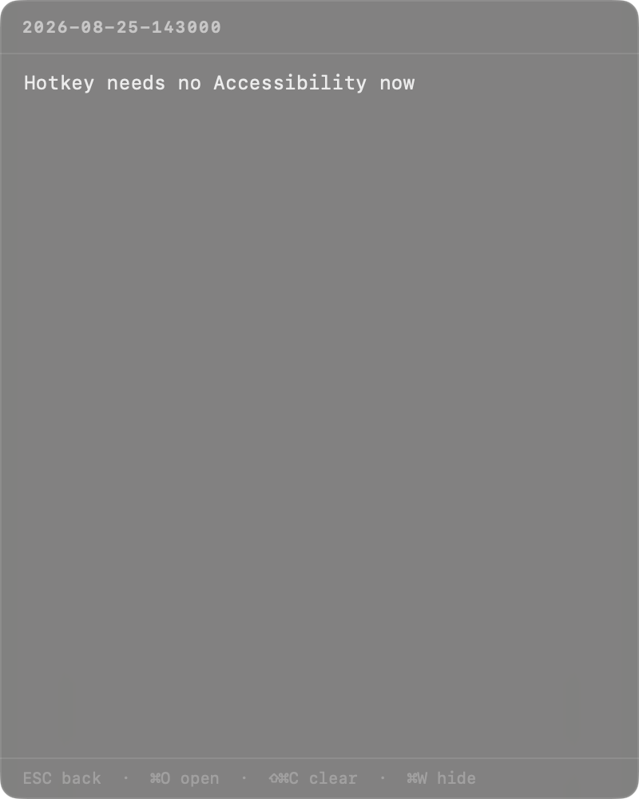
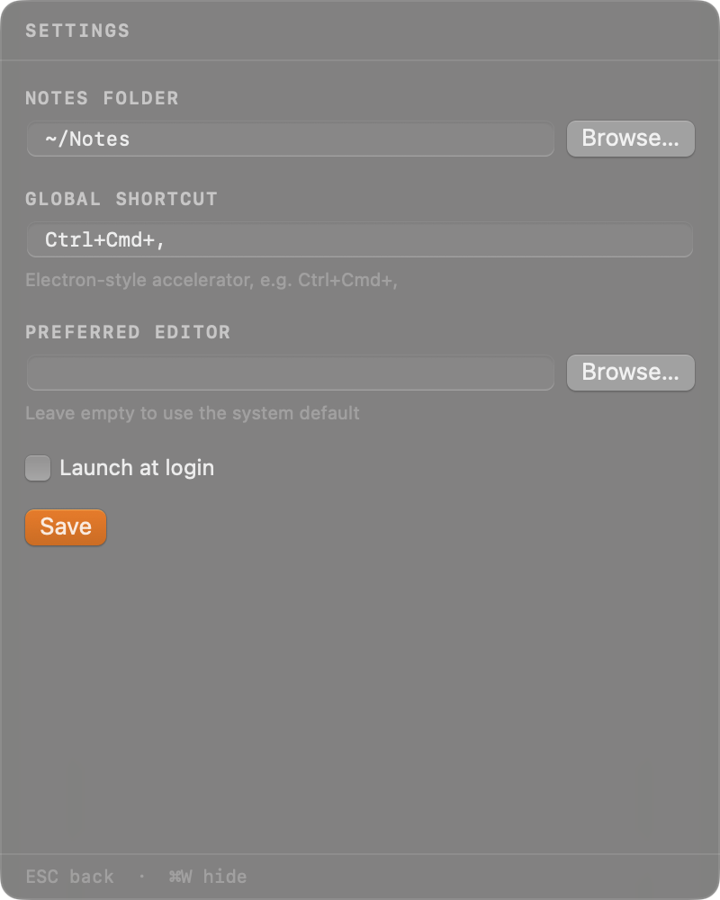

Quick markdown capture, one keystroke away. Gotta Catch 'Em All!
A macOS menubar app that puts a note window in front of you from anywhere, and gets out of the way the moment you're done. Native Swift — no Electron, no browser engine, no Accessibility permission.

Press Ctrl⌘, from any app. The window appears centred on whichever screen your cursor is on.
Just start typing. Any printable key drops you into a new note, seeded with what you typed. No “New Note” button to find.
Press ⌘↩. The note is written to disk as plain markdown and the window disappears.
From the list, the first character you press starts the note. ⌘V starts one from the clipboard.
Notes are .md files named YYYY-MM-DD-HHmmss.md in a folder you choose. No database, no lock-in — point Obsidian at the same folder.
The hotkey is registered through Carbon, not an event tap, so macOS grants it without asking you to open System Settings.
Edits are written half a second after you stop typing. ⌘O hands the file to your real editor when you need more room.
No Dock icon, no app switcher entry. A ✎ in the menu bar, and a window that hides itself the instant it loses focus.
AppKit and SwiftUI with zero dependencies. Starts instantly and idles at a few megabytes instead of a few hundred.



Command Line Tools are enough — Xcode is not required.
git clone https://github.com/hernanflores/fastball
cd fastball
make run